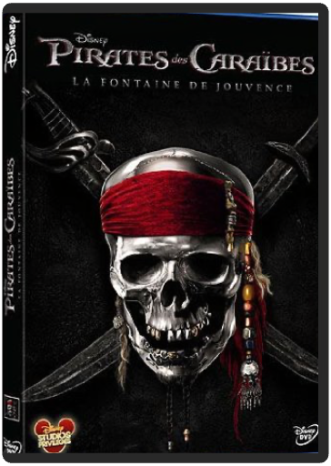
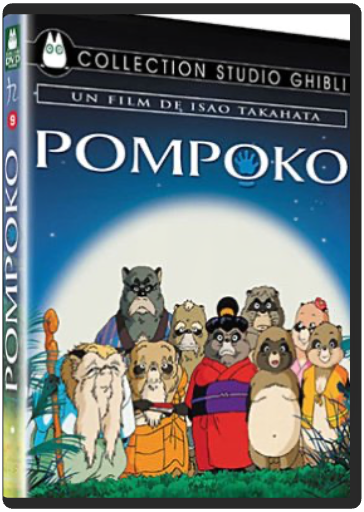

pirates des caraïbes 1 : la malédiction du black pearl - édition collectorgore verbinski pirates des caraïbes 1 : la malédiction du black pearl - édition collectorgore verbinski  Savant mélange d'Errol Flynn et de Keith Richards, Jack Sparrow est ce qui se fait de mieux en termes de pirate sur grand écran : séduisant, astucieux, filou mais, au final, doté comme il se doit d'un grand cur (très) bien caché, il affronte le redoutable capitaine Barbossa qui lui a sournoisement barboté son navire... Et les voilà tous deux en quête d'un fabuleux trésor qui pourrait permettre à Barbossa de vaincre une malédiction pour le moins désagréable : en effet, lui et ses hommes ont pris la fâcheuse habitude de se transformer en morts-vivants une fois la nuit tombée. Précisons d'emblée que ce détail, loin de faire tendre le film vers le gore – quoique les métamorphoses des pirates soient extrêmement impressionnantes –, est surtout propice à une multitude de gags. Scénarisé par les auteurs de Shrek et directement inspiré par une attraction de Disneyland, Pirates des Caraïbes est en effet destiné à conquérir tous les publics. Et ça marche ! Avec les plus jeunes, d'abord, qui s'enthousiasmeront pour ces aventuriers dignes des plus grands héros de l'âge d'or hollywoodien. Et leurs aînés seront séduits par le charme et l'humour du duo Johnny Depp-Geoffrey Rush, tout simplement époustouflant ! Ajoutez à cela la jolie fille du gouverneur Keira Knightley, remarquée dans Joue-la comme Beckham, son prétendant un brin fougueux (Orlando Bloom), une bonne dose d'effets spéciaux et de cascades, saupoudrez le DVD d'un lot de bonus, et vous obtiendrez une incontestable réussite, à savourer en famille. —Georges Dabeliou pirates des caraïbes 4 : la fontaine de jouvencerob marshall Pirates des Carraïbes :la fontaine de jouvence pompokoisao takahata Dans une montagne vivent les Tanuki, une espèce mi raton laveur mi blaireau, qui a la faculté de changer de forme quand elle le désire. Leur vie insouciante entrecoupée de batailles entre tribus ennemies leur fait ignorer la présence toujours plus proche des hommes, jusqu'au jour où ces derniers décident de faire de la montagne une ville. Pour éviter la perte de leur environnement, les Tanuki vont tenter d'effrayer les humains en jouant avec leurs peurs et leurs superstitions. Mais ceux-ci ne renoncent pas facilement...© 1994 Hatake Jimusho.GHN (c) Buena Vista Home Entertainment, Inc |


 Made with Delicious Library
Made with Delicious LibraryNancy, State zipflap congrotus delicious library Thomas, Julien